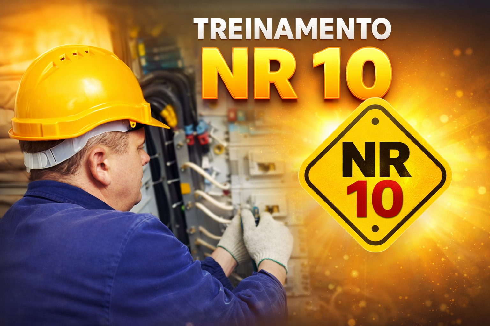
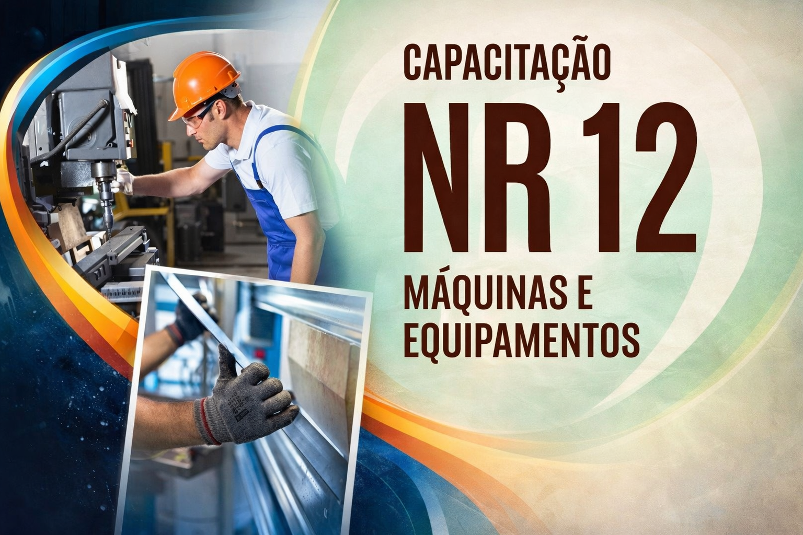
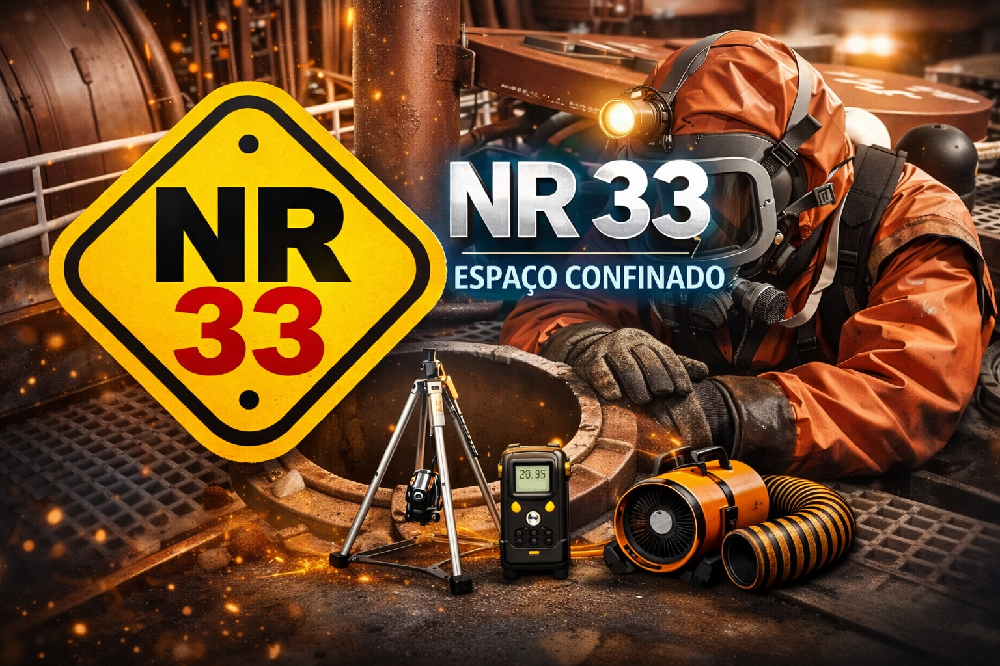
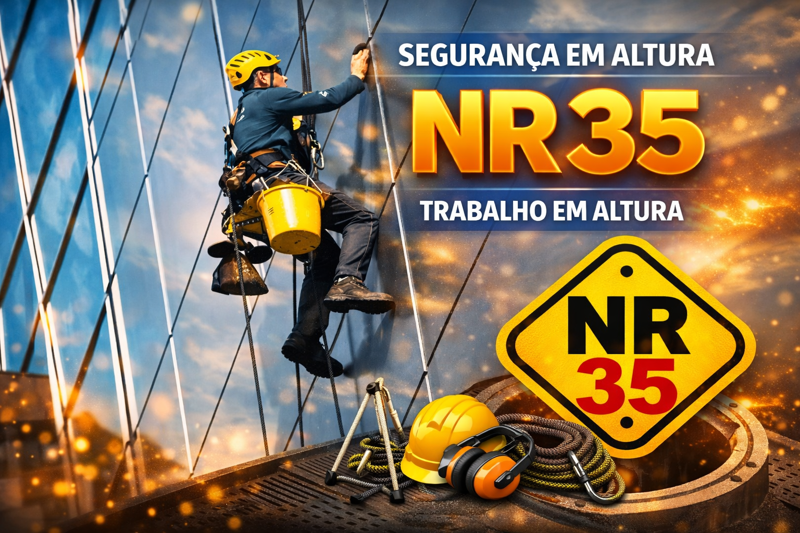
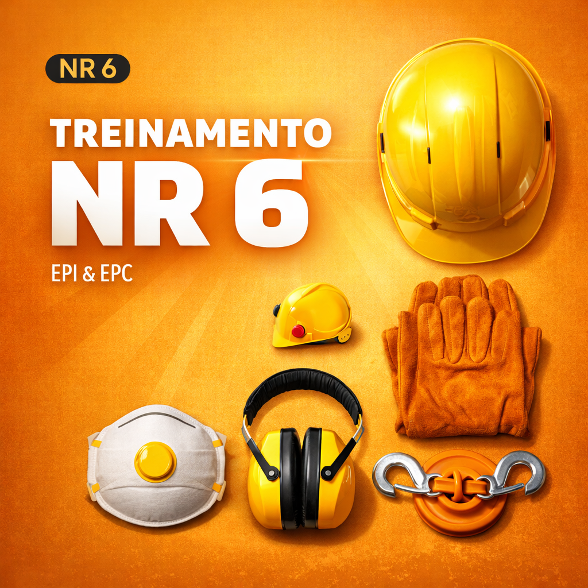
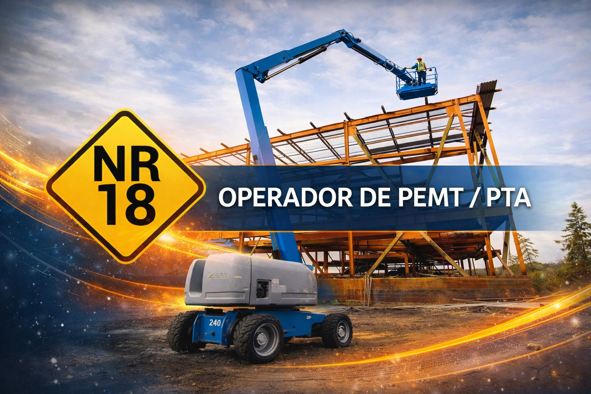
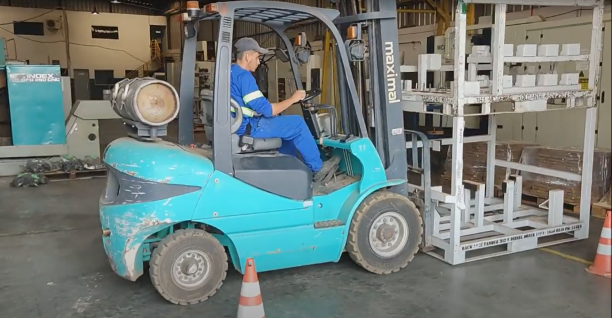
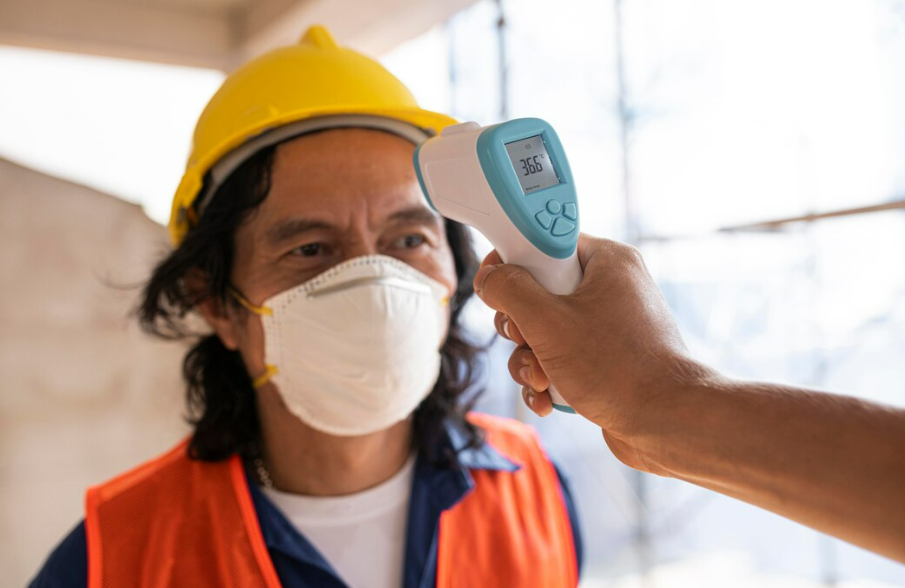

Nossos Cursos
Capacitação profissional de excelência para sua equipe
Capacitação profissional de excelência para sua equipe
Conheça nossos cursos especializados em segurança, operação e desenvolvimento profissional
Comissão Interna de Prevenção de Acidentes. Formação de membros para identificar riscos, promover segurança e prevenir acidentes no ambiente de trabalho. Essencial para empresas que buscam reduzir sinistros.

Segurança em Instalações e Serviços em Eletricidade. Treinamento obrigatório para profissionais que trabalham com eletricidade. Aborda riscos, procedimentos e medidas de proteção contra choques elétricos.
Operação de Empilhadeiras. Capacitação para operadores de empilhadeiras com segurança. Inclui conhecimentos técnicos, inspeção de equipamentos e procedimentos seguros de operação em diferentes ambientes.

Formação de Multiplicadores e Instrutores. Programa para desenvolver competências de ensino e treinamento. Prepara profissionais para transmitir conhecimento e multiplicar práticas de segurança na organização.

Técnicas de direção segura e defensiva. Treinamento para motoristas profissionais e frota corporativa. Reduz acidentes, economiza combustível e aumenta a vida útil dos veículos através de práticas seguras.

Segurança de Máquinas e Equipamentos. Formação sobre proteção, guarda-corpos e dispositivos de segurança. Essencial para operadores e manutenção de máquinas em indústrias.
Treinamento de Brigada de Incêndio. Capacitação para atuação em situações de emergência, combate a princípios de incêndio e primeiros socorros. Fundamental para a segurança patrimonial e humana.
Operação de Transpaleteira Elétrica. Treinamento para operadores de transpaleteiras. Aborda segurança, inspeção diária, carga e descarga, e movimentação segura de materiais.

Segurança em Espaços Confinados. Capacitação para trabalhos em ambientes com risco de atmosfera perigosa. Inclui identificação de riscos, ventilação, monitoramento e resgate.

Segurança em Trabalho em Altura. Formação obrigatória para profissionais que trabalham acima de 2 metros. Aborda equipamentos de proteção, ancoragem e procedimentos de segurança.

Equipamento de Proteção Individual e Coletiva. Treinamento sobre seleção, uso, conservação e limitações de EPIs e EPCs. Essencial para garantir proteção adequada em ambientes de risco.

Programa Especializado de Treinamento em Movimentação. Capacitação completa em técnicas seguras de movimentação de cargas, postura correta e prevenção de lesões musculoesqueléticas.

Segurança na Indústria da Construção. Treinamento focado nas normas de segurança para canteiros de obras, prevenindo riscos específicos do setor e garantindo a integridade dos trabalhadores.



O curso de NR 11 para operador de empilhadeira capacita o profissional a operar o equipamento de forma segura e eficiente, conforme as normas regulamentadoras.
Ele abrange temas como legislação, tipos de empilhadeiras, técnicas de manuseio de cargas, manutenção preventiva e inspeção de equipamentos, garantindo a segurança do trabalhador e do ambiente.
Legislação e normas: Diretrizes da NR 11 sobre transporte,
movimentação, armazenagem e manuseio de materiais.
Tipos de empilhadeiras: Modelos, características e aplicações.
Técnicas de operação: Manuseio de cargas, inspeção e manutenção
preventiva.
Segurança no trabalho: Prevenção de acidentes e garantia de um ambiente
mais protegido.
Carga Horária: 32 horas
Contato

O curso multiplicador NR 35 capacita profissionais a ministrar treinamentos sobre trabalho em altura, ensinando teoria e prática da Norma Regulamentadora 35.
O objetivo é formar instrutores qualificados para transmitir conhecimentos sobre segurança, EPIs, procedimentos de resgate e análise de riscos.
Capacitação de instrutores: Prepara o profissional para ministrar
treinamentos com segurança e qualidade.
Abrangência: Seleção, inspeção e uso de equipamentos, planejamento de
tarefas, riscos e procedimentos de emergência.
Objetivo principal: Garantir a segurança em trabalhos em altura,
minimizando acidentes.
Proficiência: Agrega valor ao profissional de segurança do trabalho.
Networking: Troca de experiências com outros profissionais.
Qualificação: Habilita a ministrar treinamentos com excelência e
segurança.
Carga Horária: 40 horas
Contato


O curso de direção defensiva e preventiva ensina condutores a dirigir de forma mais segura, antecipando riscos e evitando acidentes.
O conteúdo aborda técnicas de dirigibilidade, manutenção preventiva de veículos, legislação de trânsito e como reagir a situações de perigo.
Direção preventiva e evasiva: Técnicas para prever e reagir a
imprevistos no trânsito.
Manutenção do veículo: Checagem de equipamentos de segurança e
componentes do veículo.
Condições de trânsito e climáticas: Condução em chuva, neblina e
tráfego intenso.
Reação a acidentes: Como agir e minimizar impactos.
Condições físicas e mentais: Influência do sono, estresse, álcool e
medicamentos na direção.
Básico: 4 horas
Avançado: 16 horas


O curso de NR 12 é obrigatório para profissionais que operam, mantêm ou inspecionam máquinas e equipamentos, visando garantir a segurança no trabalho.
Regulamentado pela Norma Regulamentadora nº 12, aborda riscos mecânicos, elétricos, térmicos, químicos e ergonômicos, além de métodos para prevenção e controle.
Princípios de Segurança: Aplicação de regras, procedimentos e uso
correto dos dispositivos de segurança.
Procedimentos Seguros: Métodos de trabalho, operação, parada e ajustes
nas máquinas.
Proteções e Dispositivos: Importância das proteções coletivas e
individuais, como grades e sensores.
Manutenção e Intervenções: Bloqueio de energias (elétrica, mecânica e
pneumática).
Situações de Emergência: Ações em caso de falhas e retirada de
proteções.
Identificação e Análise de Riscos: Riscos específicos de cada máquina e
medidas de proteção.
Carga Horária: 8 horas
Contato
O curso de espaço confinado NR 33 é uma capacitação obrigatória para trabalhadores, vigias e supervisores que atuam em espaços confinados.
O treinamento ensina a identificar riscos, realizar controle e monitoramento, além de aplicar procedimentos de segurança para garantir a integridade dos trabalhadores, com conteúdo teórico e prático.
Trabalhador autorizado e Vigia: 16h (inicial) e 8h (reciclagem anual).
Supervisor de entrada: 40h (inicial) e 8h (reciclagem anual).
Praticidade: No mínimo 50% da carga horária deve ser prática para
validade do curso.


O treinamento de EPI e EPC é fundamental para a segurança no trabalho, garantindo que os colaboradores saibam utilizar corretamente os Equipamentos de Proteção Individual e se beneficiar dos Equipamentos de Proteção Coletiva.
É frequentemente exigido pela legislação trabalhista, especialmente pela Norma Regulamentadora nº 6 (NR-6), abordando responsabilidades do empregador e do empregado.
Definições e conceitos: O que são EPIs e sua finalidade.
Identificação de riscos: Análise dos perigos por função ou
ambiente.
Tipos de EPIs:
Uso correto: Como vestir, ajustar e utilizar adequadamente.
Guarda e conservação: Limpeza, higienização e manutenção.
Limitações dos EPIs: Entendimento sobre restrições e proteção
parcial.
Carga Horária: 04 horas
Contato
O curso de Plataforma Elevatória Móvel de Trabalho (PEMT), conforme a NR 18, capacita profissionais para operar esses equipamentos com segurança, seguindo a legislação vigente.
O treinamento contempla aspectos teóricos e práticos, garantindo a integridade física dos trabalhadores e a prevenção de acidentes.
Segurança: Procedimentos e normas da NR 18 para operação segura.
Operação: Manuseio, movimentação e deslocamento da plataforma.
Manutenção: Noções de manutenção preventiva e responsabilidades do
operador e proprietário.
EPIs: Uso correto de capacete com jugular e cinto tipo
paraquedista.
Formação inicial: Capacita para operar plataformas conforme NR 18.
Reciclagem: Atualização periódica com menor carga horária.
Cursos específicos: Plataformas 1A, 1B, 3A e 3B.
Carga Horária: 08 horas
Contato